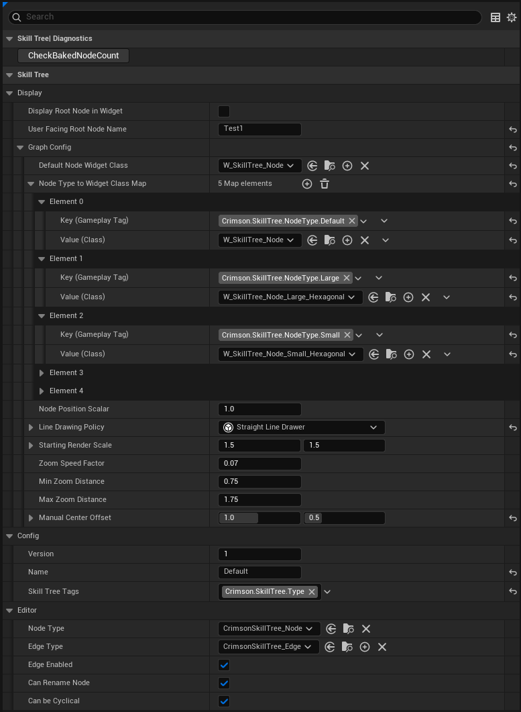

This section guides you through the process of creating the skill tree data asset and designing its structure in the editor.
Everything starts with the Skill Tree asset itself.
Crimson Skill Tree > Crimson Skill Tree.CST_Player_CoreSkills.After creating the Skill Tree asset, you can select it in the Content Browser to access its global settings in the Details panel. These settings control the tree's appearance, editor behavior, and metadata.
This is the most critical section for customizing the visual presentation of your skill tree in the UI.
Default Node Widget Class is used for any node types not found in this map.You can create your own Node Visuals by creating a child of CrimsonSkillTreeWidget_Node.h and binding the required variables.
If you want to use the already provided W_SkillTree_Node and just change its look, create a child blueprint and override the provided values.
Straight Line Drawer.You can create your own Line Drawing Policy by creating a child of CrimsonSkillTreeWidget_LineDrawingPolicyBase.h and overriding the respective functions
Starting Render Scale, Zoom Speed Factor, and Min/Max Zoom Distance control the user's view of the skill tree graph, allowing you to fine-tune the camera behavior.These settings customize the behavior of the graph editor specifically for this asset.
Can Rename Node and Can be Cyclical let you enforce design rules, such as preventing circular dependencies in the tree.These sections hold metadata and minor display options for the asset.
User Facing Root Node Name.Double-click your new Skill Tree asset to open the custom graph editor.
RootNode. This is the starting point of the tree. It's always active and has no parents.CrimsonSkillTree_Node) or a Visual Node (a decorative comment box).Click on a node in the graph to see its properties in the Details panel. Here are the key settings:
We will go over advanced usages on Node Cost, Activation Condition and Level Changed Events in their respective sections of this documentation.